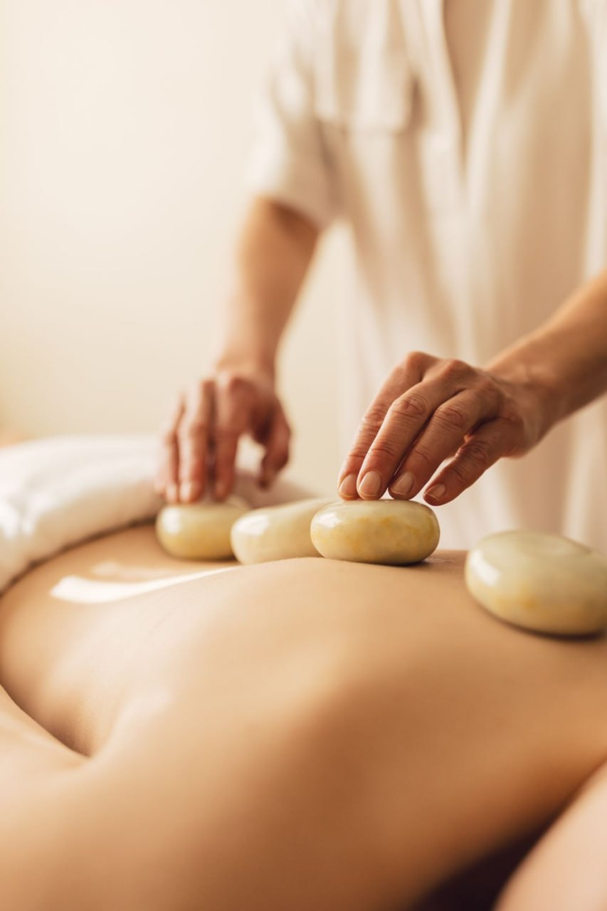

Massage Therapy Services
| Image | Massage Type | Description |
|---|---|---|
| Traditional Massage | A classic postnatal massage using traditional techniques to improve blood circulation, reduce body tension, and support faster recovery after childbirth. | |

|
Relaxing Massage | A gentle and soothing massage focused on stress relief, relaxation, and mental calm, perfect for mothers seeking comfort and emotional balance. |
|  | Therapeutic Massage | A targeted massage treatment designed to relieve muscle pain, improve mobility, and address specific postnatal discomfort or body tension. |